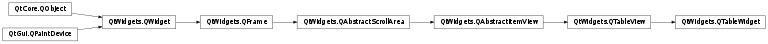
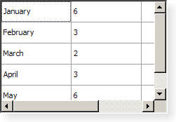

QTableWidget¶
Synopsis¶
Functions¶
- def
cellWidget(row, column) - def
closePersistentEditor(item) - def
column(item) - def
columnCount() - def
currentColumn() - def
currentItem() - def
currentRow() - def
editItem(item) - def
findItems(text, flags) - def
horizontalHeaderItem(column) - def
indexFromItem(item) - def
indexFromItem(item) - def
isItemSelected(item) - def
isPersistentEditorOpen(item) - def
item(row, column) - def
itemAt(p) - def
itemAt(x, y) - def
itemFromIndex(index) - def
itemPrototype() - def
items(data) - def
openPersistentEditor(item) - def
removeCellWidget(row, column) - def
row(item) - def
rowCount() - def
selectedItems() - def
selectedRanges() - def
setCellWidget(row, column, widget) - def
setColumnCount(columns) - def
setCurrentCell(row, column) - def
setCurrentCell(row, column, command) - def
setCurrentItem(item) - def
setCurrentItem(item, command) - def
setHorizontalHeaderItem(column, item) - def
setHorizontalHeaderLabels(labels) - def
setItem(row, column, item) - def
setItemPrototype(item) - def
setItemSelected(item, select) - def
setRangeSelected(range, select) - def
setRowCount(rows) - def
setVerticalHeaderItem(row, item) - def
setVerticalHeaderLabels(labels) - def
sortItems(column[, order=Qt.AscendingOrder]) - def
takeHorizontalHeaderItem(column) - def
takeItem(row, column) - def
takeVerticalHeaderItem(row) - def
verticalHeaderItem(row) - def
visualColumn(logicalColumn) - def
visualItemRect(item) - def
visualRow(logicalRow)
Virtual functions¶
- def
dropMimeData(row, column, data, action) - def
mimeData(items) - def
mimeTypes() - def
supportedDropActions()
Slots¶
- def
clear() - def
clearContents() - def
insertColumn(column) - def
insertRow(row) - def
removeColumn(column) - def
removeRow(row) - def
scrollToItem(item[, hint=EnsureVisible])
Signals¶
- def
cellActivated(row, column) - def
cellChanged(row, column) - def
cellClicked(row, column) - def
cellDoubleClicked(row, column) - def
cellEntered(row, column) - def
cellPressed(row, column) - def
currentCellChanged(currentRow, currentColumn, previousRow, previousColumn) - def
currentItemChanged(current, previous) - def
itemActivated(item) - def
itemChanged(item) - def
itemClicked(item) - def
itemDoubleClicked(item) - def
itemEntered(item) - def
itemPressed(item) - def
itemSelectionChanged()
Detailed Description¶
The
PySide2.QtWidgets.QTableWidgetclass provides an item-based table view with a default model.Table widgets provide standard table display facilities for applications. The items in a
PySide2.QtWidgets.QTableWidgetare provided byPySide2.QtWidgets.QTableWidgetItem.If you want a table that uses your own data model you should use
PySide2.QtWidgets.QTableViewrather than this class.Table widgets can be constructed with the required numbers of rows and columns:
tableWidget = QTableWidget(12, 3, self)Alternatively, tables can be constructed without a given size and resized later:
tableWidget = QTableWidget() tableWidget.setRowCount(10) tableWidget.setColumnCount(5)Items are created outside the table (with no parent widget) and inserted into the table with
PySide2.QtWidgets.QTableWidget.setItem():newItem = QTableWidgetItem(tr("%s" % ((row+1)*(column+1)))) tableWidget.setItem(row, column, newItem)If you want to enable sorting in your table widget, do so after you have populated it with items, otherwise sorting may interfere with the insertion order (see
PySide2.QtWidgets.QTableWidget.setItem()for details).Tables can be given both horizontal and vertical headers. The simplest way to create the headers is to supply a list of strings to the
PySide2.QtWidgets.QTableWidget.setHorizontalHeaderLabels()andPySide2.QtWidgets.QTableWidget.setVerticalHeaderLabels()functions. These will provide simple textual headers for the table’s columns and rows. More sophisticated headers can be created from existing table items that are usually constructed outside the table. For example, we can construct a table item with an icon and aligned text, and use it as the header for a particular column:cubesHeaderItem = QTableWidgetItem(tr("Cubes")) cubesHeaderItem.setIcon(QIcon(QPixmap(":/Images/cubed.png"))) cubesHeaderItem.setTextAlignment(Qt::AlignVCenter)The number of rows in the table can be found with
PySide2.QtWidgets.QTableWidget.rowCount(), and the number of columns withPySide2.QtWidgets.QTableWidget.columnCount(). The table can be cleared with thePySide2.QtWidgets.QTableWidget.clear()function.
-
class
PySide2.QtWidgets.QTableWidget([parent=nullptr])¶ -
class
PySide2.QtWidgets.QTableWidget(rows, columns[, parent=nullptr]) Parameters: - columns –
PySide2.QtCore.int - rows –
PySide2.QtCore.int - parent –
PySide2.QtWidgets.QWidget
Creates a new table view with the given
parent.Creates a new table view with the given
rowsandcolumns, and with the givenparent.- columns –
-
PySide2.QtWidgets.QTableWidget.cellActivated(row, column)¶ Parameters: - row –
PySide2.QtCore.int - column –
PySide2.QtCore.int
- row –
-
PySide2.QtWidgets.QTableWidget.cellChanged(row, column)¶ Parameters: - row –
PySide2.QtCore.int - column –
PySide2.QtCore.int
- row –
-
PySide2.QtWidgets.QTableWidget.cellClicked(row, column)¶ Parameters: - row –
PySide2.QtCore.int - column –
PySide2.QtCore.int
- row –
-
PySide2.QtWidgets.QTableWidget.cellDoubleClicked(row, column)¶ Parameters: - row –
PySide2.QtCore.int - column –
PySide2.QtCore.int
- row –
-
PySide2.QtWidgets.QTableWidget.cellEntered(row, column)¶ Parameters: - row –
PySide2.QtCore.int - column –
PySide2.QtCore.int
- row –
-
PySide2.QtWidgets.QTableWidget.cellPressed(row, column)¶ Parameters: - row –
PySide2.QtCore.int - column –
PySide2.QtCore.int
- row –
-
PySide2.QtWidgets.QTableWidget.cellWidget(row, column)¶ Parameters: - row –
PySide2.QtCore.int - column –
PySide2.QtCore.int
Return type: Returns the widget displayed in the cell in the given
rowandcolumn.Note
The table takes ownership of the widget.
- row –
-
PySide2.QtWidgets.QTableWidget.clear()¶ Removes all items in the view. This will also remove all selections and headers. If you don’t want to remove the headers, use
QTableWidget.clearContents(). The table dimensions stay the same.
-
PySide2.QtWidgets.QTableWidget.clearContents()¶ Removes all items not in the headers from the view. This will also remove all selections. The table dimensions stay the same.
-
PySide2.QtWidgets.QTableWidget.closePersistentEditor(item)¶ Parameters: item – PySide2.QtWidgets.QTableWidgetItemCloses the persistent editor for
item.
-
PySide2.QtWidgets.QTableWidget.column(item)¶ Parameters: item – PySide2.QtWidgets.QTableWidgetItemReturn type: PySide2.QtCore.intReturns the column for the
item.
-
PySide2.QtWidgets.QTableWidget.columnCount()¶ Return type: PySide2.QtCore.intReturns the number of columns.
-
PySide2.QtWidgets.QTableWidget.currentCellChanged(currentRow, currentColumn, previousRow, previousColumn)¶ Parameters: - currentRow –
PySide2.QtCore.int - currentColumn –
PySide2.QtCore.int - previousRow –
PySide2.QtCore.int - previousColumn –
PySide2.QtCore.int
- currentRow –
-
PySide2.QtWidgets.QTableWidget.currentColumn()¶ Return type: PySide2.QtCore.intReturns the column of the current item.
-
PySide2.QtWidgets.QTableWidget.currentItem()¶ Return type: PySide2.QtWidgets.QTableWidgetItemReturns the current item.
-
PySide2.QtWidgets.QTableWidget.currentItemChanged(current, previous)¶ Parameters: - current –
PySide2.QtWidgets.QTableWidgetItem - previous –
PySide2.QtWidgets.QTableWidgetItem
- current –
-
PySide2.QtWidgets.QTableWidget.currentRow()¶ Return type: PySide2.QtCore.intReturns the row of the current item.
-
PySide2.QtWidgets.QTableWidget.dropMimeData(row, column, data, action)¶ Parameters: - row –
PySide2.QtCore.int - column –
PySide2.QtCore.int - data –
PySide2.QtCore.QMimeData - action –
PySide2.QtCore.Qt.DropAction
Return type: PySide2.QtCore.boolHandles the
datasupplied by a drag and drop operation that ended with the givenactionin the givenrowandcolumn. Returnstrueif the data and action can be handled by the model; otherwise returnsfalse.- row –
-
PySide2.QtWidgets.QTableWidget.editItem(item)¶ Parameters: item – PySide2.QtWidgets.QTableWidgetItemStarts editing the
itemif it is editable.
-
PySide2.QtWidgets.QTableWidget.findItems(text, flags)¶ Parameters: - text – unicode
- flags –
PySide2.QtCore.Qt.MatchFlags
Return type: Finds items that matches the
textusing the givenflags.
-
PySide2.QtWidgets.QTableWidget.horizontalHeaderItem(column)¶ Parameters: column – PySide2.QtCore.intReturn type: PySide2.QtWidgets.QTableWidgetItemReturns the horizontal header item for column,
column, if one has been set; otherwise returns 0.
-
PySide2.QtWidgets.QTableWidget.indexFromItem(item)¶ Parameters: item – PySide2.QtWidgets.QTableWidgetItemReturn type: PySide2.QtCore.QModelIndexReturns the
PySide2.QtCore.QModelIndexassociated with the givenitem.Note
In Qt versions prior to 5.10, this function took a non-
constitem.
-
PySide2.QtWidgets.QTableWidget.indexFromItem(item) Parameters: item – PySide2.QtWidgets.QTableWidgetItemReturn type: PySide2.QtCore.QModelIndexThis is an overloaded function.
-
PySide2.QtWidgets.QTableWidget.insertColumn(column)¶ Parameters: column – PySide2.QtCore.intInserts an empty column into the table at
column.
-
PySide2.QtWidgets.QTableWidget.insertRow(row)¶ Parameters: row – PySide2.QtCore.intInserts an empty row into the table at
row.
-
PySide2.QtWidgets.QTableWidget.isItemSelected(item)¶ Parameters: item – PySide2.QtWidgets.QTableWidgetItemReturn type: PySide2.QtCore.boolReturns
trueif theitemis selected, otherwise returnsfalse.This function is deprecated. Use
QTableWidgetItem.isSelected()instead.
-
PySide2.QtWidgets.QTableWidget.isPersistentEditorOpen(item)¶ Parameters: item – PySide2.QtWidgets.QTableWidgetItemReturn type: PySide2.QtCore.boolReturns whether a persistent editor is open for item
item.
-
PySide2.QtWidgets.QTableWidget.item(row, column)¶ Parameters: - row –
PySide2.QtCore.int - column –
PySide2.QtCore.int
Return type: Returns the item for the given
rowandcolumnif one has been set; otherwise returns 0.- row –
-
PySide2.QtWidgets.QTableWidget.itemActivated(item)¶ Parameters: item – PySide2.QtWidgets.QTableWidgetItem
-
PySide2.QtWidgets.QTableWidget.itemAt(p)¶ Parameters: p – PySide2.QtCore.QPointReturn type: PySide2.QtWidgets.QTableWidgetItemReturns a pointer to the item at the given
point, or returns 0 ifpointis not covered by an item in the table widget.
-
PySide2.QtWidgets.QTableWidget.itemAt(x, y) Parameters: - x –
PySide2.QtCore.int - y –
PySide2.QtCore.int
Return type: Returns the item at the position equivalent to
PySide2.QtCore.QPoint(ax,ay) in the table widget’s coordinate system, or returns 0 if the specified point is not covered by an item in the table widget.- x –
-
PySide2.QtWidgets.QTableWidget.itemChanged(item)¶ Parameters: item – PySide2.QtWidgets.QTableWidgetItem
-
PySide2.QtWidgets.QTableWidget.itemClicked(item)¶ Parameters: item – PySide2.QtWidgets.QTableWidgetItem
-
PySide2.QtWidgets.QTableWidget.itemDoubleClicked(item)¶ Parameters: item – PySide2.QtWidgets.QTableWidgetItem
-
PySide2.QtWidgets.QTableWidget.itemEntered(item)¶ Parameters: item – PySide2.QtWidgets.QTableWidgetItem
-
PySide2.QtWidgets.QTableWidget.itemFromIndex(index)¶ Parameters: index – PySide2.QtCore.QModelIndexReturn type: PySide2.QtWidgets.QTableWidgetItemReturns a pointer to the
PySide2.QtWidgets.QTableWidgetItemassociated with the givenindex.
-
PySide2.QtWidgets.QTableWidget.itemPressed(item)¶ Parameters: item – PySide2.QtWidgets.QTableWidgetItem
-
PySide2.QtWidgets.QTableWidget.itemPrototype()¶ Return type: PySide2.QtWidgets.QTableWidgetItemReturns the item prototype used by the table.
-
PySide2.QtWidgets.QTableWidget.itemSelectionChanged()¶
-
PySide2.QtWidgets.QTableWidget.items(data)¶ Parameters: data – PySide2.QtCore.QMimeDataReturn type: Returns a list of pointers to the items contained in the
dataobject. If the object was not created by aPySide2.QtWidgets.QTreeWidgetin the same process, the list is empty.
-
PySide2.QtWidgets.QTableWidget.mimeData(items)¶ Parameters: items – Return type: PySide2.QtCore.QMimeDataReturns an object that contains a serialized description of the specified
items. The format used to describe the items is obtained from thePySide2.QtWidgets.QTableWidget.mimeTypes()function.If the list of items is empty, 0 is returned rather than a serialized empty list.
-
PySide2.QtWidgets.QTableWidget.mimeTypes()¶ Return type: list of strings Returns a list of MIME types that can be used to describe a list of tablewidget items.
-
PySide2.QtWidgets.QTableWidget.openPersistentEditor(item)¶ Parameters: item – PySide2.QtWidgets.QTableWidgetItemOpens an editor for the give
item. The editor remains open after editing.
-
PySide2.QtWidgets.QTableWidget.removeCellWidget(row, column)¶ Parameters: - row –
PySide2.QtCore.int - column –
PySide2.QtCore.int
Removes the widget set on the cell indicated by
rowandcolumn.- row –
-
PySide2.QtWidgets.QTableWidget.removeColumn(column)¶ Parameters: column – PySide2.QtCore.intRemoves the column
columnand all its items from the table.
-
PySide2.QtWidgets.QTableWidget.removeRow(row)¶ Parameters: row – PySide2.QtCore.intRemoves the row
rowand all its items from the table.
-
PySide2.QtWidgets.QTableWidget.row(item)¶ Parameters: item – PySide2.QtWidgets.QTableWidgetItemReturn type: PySide2.QtCore.intReturns the row for the
item.
-
PySide2.QtWidgets.QTableWidget.rowCount()¶ Return type: PySide2.QtCore.intReturns the number of rows.
-
PySide2.QtWidgets.QTableWidget.scrollToItem(item[, hint=EnsureVisible])¶ Parameters: Scrolls the view if necessary to ensure that the
itemis visible. Thehintparameter specifies more precisely where theitemshould be located after the operation.
-
PySide2.QtWidgets.QTableWidget.selectedItems()¶ Return type: Returns a list of all selected items.
This function returns a list of pointers to the contents of the selected cells. Use the
PySide2.QtWidgets.QTableView.selectedIndexes()function to retrieve the complete selection including empty cells.See also
PySide2.QtWidgets.QTableView.selectedIndexes()
-
PySide2.QtWidgets.QTableWidget.selectedRanges()¶ Return type: Returns a list of all selected ranges.
-
PySide2.QtWidgets.QTableWidget.setCellWidget(row, column, widget)¶ Parameters: - row –
PySide2.QtCore.int - column –
PySide2.QtCore.int - widget –
PySide2.QtWidgets.QWidget
Sets the given
widgetto be displayed in the cell in the givenrowandcolumn, passing the ownership of the widget to the table.If cell widget A is replaced with cell widget B, cell widget A will be deleted. For example, in the code snippet below, the
PySide2.QtWidgets.QLineEditobject will be deleted.setCellWidget(index, QLineEdit()) ... setCellWidget(index, QTextEdit())
- row –
-
PySide2.QtWidgets.QTableWidget.setColumnCount(columns)¶ Parameters: columns – PySide2.QtCore.intSets the number of columns in this table’s model to
columns. If this is less thanPySide2.QtWidgets.QTableWidget.columnCount(), the data in the unwanted columns is discarded.
-
PySide2.QtWidgets.QTableWidget.setCurrentCell(row, column)¶ Parameters: - row –
PySide2.QtCore.int - column –
PySide2.QtCore.int
Sets the current cell to be the cell at position (
row,column).Depending on the current
selection mode, the cell may also be selected.- row –
-
PySide2.QtWidgets.QTableWidget.setCurrentCell(row, column, command) Parameters: - row –
PySide2.QtCore.int - column –
PySide2.QtCore.int - command –
PySide2.QtCore.QItemSelectionModel.SelectionFlags
Sets the current cell to be the cell at position (
row,column), using the givencommand.- row –
-
PySide2.QtWidgets.QTableWidget.setCurrentItem(item)¶ Parameters: item – PySide2.QtWidgets.QTableWidgetItemSets the current item to
item.Unless the selection mode is
NoSelection, the item is also selected.
-
PySide2.QtWidgets.QTableWidget.setCurrentItem(item, command) Parameters: - item –
PySide2.QtWidgets.QTableWidgetItem - command –
PySide2.QtCore.QItemSelectionModel.SelectionFlags
Sets the current item to be
item, using the givencommand.- item –
-
PySide2.QtWidgets.QTableWidget.setHorizontalHeaderItem(column, item)¶ Parameters: - column –
PySide2.QtCore.int - item –
PySide2.QtWidgets.QTableWidgetItem
Sets the horizontal header item for column
columntoitem. If necessary, the column count is increased to fit the item. The previous header item (if there was one) is deleted.- column –
-
PySide2.QtWidgets.QTableWidget.setHorizontalHeaderLabels(labels)¶ Parameters: labels – list of strings Sets the horizontal header labels using
labels.
-
PySide2.QtWidgets.QTableWidget.setItem(row, column, item)¶ Parameters: - row –
PySide2.QtCore.int - column –
PySide2.QtCore.int - item –
PySide2.QtWidgets.QTableWidgetItem
Sets the item for the given
rowandcolumntoitem.The table takes ownership of the item.
Note that if sorting is enabled (see
PySide2.QtWidgets.QTableView.sortingEnabled()) andcolumnis the current sort column, therowwill be moved to the sorted position determined byitem.If you want to set several items of a particular row (say, by calling in a loop), you may want to turn off sorting before doing so, and turn it back on afterwards; this will allow you to use the same
rowargument for all items in the same row (i.e. will not move the row).- row –
-
PySide2.QtWidgets.QTableWidget.setItemPrototype(item)¶ Parameters: item – PySide2.QtWidgets.QTableWidgetItemSets the item prototype for the table to the specified
item.The table widget will use the item prototype clone function when it needs to create a new table item. For example when the user is editing in an empty cell. This is useful when you have a
PySide2.QtWidgets.QTableWidgetItemsubclass and want to make sure thatPySide2.QtWidgets.QTableWidgetcreates instances of your subclass.The table takes ownership of the prototype.
-
PySide2.QtWidgets.QTableWidget.setItemSelected(item, select)¶ Parameters: - item –
PySide2.QtWidgets.QTableWidgetItem - select –
PySide2.QtCore.bool
Selects or deselects
itemdepending onselect.This function is deprecated. Use
QTableWidgetItem.setSelected()instead.- item –
-
PySide2.QtWidgets.QTableWidget.setRangeSelected(range, select)¶ Parameters: - range –
PySide2.QtWidgets.QTableWidgetSelectionRange - select –
PySide2.QtCore.bool
Selects or deselects the
rangedepending onselect.- range –
-
PySide2.QtWidgets.QTableWidget.setRowCount(rows)¶ Parameters: rows – PySide2.QtCore.intSets the number of rows in this table’s model to
rows. If this is less thanPySide2.QtWidgets.QTableWidget.rowCount(), the data in the unwanted rows is discarded.
-
PySide2.QtWidgets.QTableWidget.setVerticalHeaderItem(row, item)¶ Parameters: - row –
PySide2.QtCore.int - item –
PySide2.QtWidgets.QTableWidgetItem
Sets the vertical header item for row
rowtoitem.- row –
-
PySide2.QtWidgets.QTableWidget.setVerticalHeaderLabels(labels)¶ Parameters: labels – list of strings Sets the vertical header labels using
labels.
-
PySide2.QtWidgets.QTableWidget.sortItems(column[, order=Qt.AscendingOrder])¶ Parameters: - column –
PySide2.QtCore.int - order –
PySide2.QtCore.Qt.SortOrder
Sorts all the rows in the table widget based on
columnandorder.- column –
-
PySide2.QtWidgets.QTableWidget.supportedDropActions()¶ Return type: PySide2.QtCore.Qt.DropActionsReturns the drop actions supported by this view.
See also
Qt.DropActions
-
PySide2.QtWidgets.QTableWidget.takeHorizontalHeaderItem(column)¶ Parameters: column – PySide2.QtCore.intReturn type: PySide2.QtWidgets.QTableWidgetItemRemoves the horizontal header item at
columnfrom the header without deleting it.
-
PySide2.QtWidgets.QTableWidget.takeItem(row, column)¶ Parameters: - row –
PySide2.QtCore.int - column –
PySide2.QtCore.int
Return type: Removes the item at
rowandcolumnfrom the table without deleting it.- row –
-
PySide2.QtWidgets.QTableWidget.takeVerticalHeaderItem(row)¶ Parameters: row – PySide2.QtCore.intReturn type: PySide2.QtWidgets.QTableWidgetItemRemoves the vertical header item at
rowfrom the header without deleting it.
-
PySide2.QtWidgets.QTableWidget.verticalHeaderItem(row)¶ Parameters: row – PySide2.QtCore.intReturn type: PySide2.QtWidgets.QTableWidgetItemReturns the vertical header item for row
row.
-
PySide2.QtWidgets.QTableWidget.visualColumn(logicalColumn)¶ Parameters: logicalColumn – PySide2.QtCore.intReturn type: PySide2.QtCore.intReturns the visual column of the given
logicalColumn.
-
PySide2.QtWidgets.QTableWidget.visualItemRect(item)¶ Parameters: item – PySide2.QtWidgets.QTableWidgetItemReturn type: PySide2.QtCore.QRectReturns the rectangle on the viewport occupied by the item at
item.
-
PySide2.QtWidgets.QTableWidget.visualRow(logicalRow)¶ Parameters: logicalRow – PySide2.QtCore.intReturn type: PySide2.QtCore.intReturns the visual row of the given
logicalRow.
© 2018 The Qt Company Ltd. Documentation contributions included herein are the copyrights of their respective owners. The documentation provided herein is licensed under the terms of the GNU Free Documentation License version 1.3 as published by the Free Software Foundation. Qt and respective logos are trademarks of The Qt Company Ltd. in Finland and/or other countries worldwide. All other trademarks are property of their respective owners.